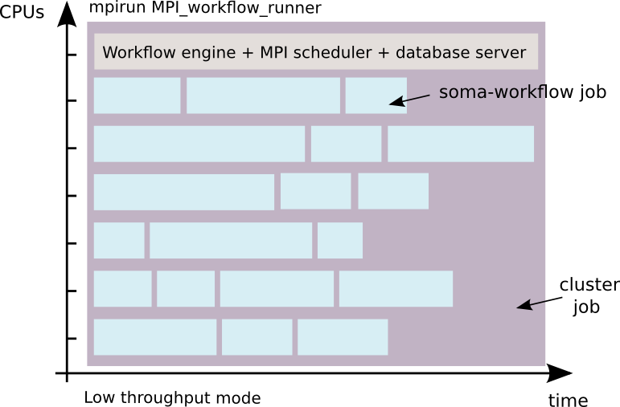
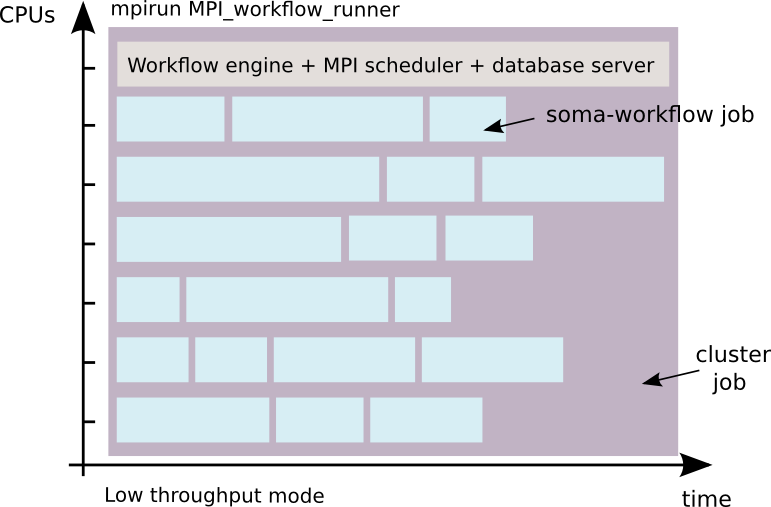

MPI workflow runner¶
The MPI workflow runner is a second way of executing workflows using a cluster:
high throughput mode (using DRMAA for example): 1 job = 1 cluster job
low throughput mode with the MPI workflow runner: 1 workflow = 1 cluster job
 

{kind=link}
This mode makes it possible:
to run workflows on clusters with limited number of job per user.
to run workflows on clusters where it is not possible to run a server process.
to run workflows if you only have a simple MPI installation.
to remove the time interval between jobs execution which is due to the submission of each job to the cluster management system.
For this reason, and the fact that parallelization in worker processes avoids overheads due to locks and the python GIL contrarily to the standard threaded local mode, it is much more efficient for large workflows of small jobs.
This mode is for advanced users who know how to use a cluster. In this mode the workflow control (submission, stop and resart) via the python API is disabled. The DRMS commands such as qsub and qdel for PBS for example, must be used instead. However, the monitoring tools (GUI and Python API) remains the same.
When to use the MPI mode
On a cluster with limited number of job per user
Locally when workflows involve many jobs: as said earlier, this mode is more efficient than the local scheduler
When not to use the MPI mode
the MPI mode consumes more CPU than the local scheduler, because it removes wait intervals in jobs execution. It will basically consume some CPU even when there are no jobs to process.
Requirements:¶
Python version 3 or more
Installation:¶
This mode use pure Python code, you do not need to compile anything: c.f. Soma-workflow main page for installation.
Configuration:¶
Required items:
DATABASE_FILE
TRANSFERED_FILES_DIR
SCHEDULER_TYPE
Note
SCHEDULER_TYPE must be set to “mpi”
Example:
[Titan_MPI]
DATABASE_FILE = path_mpi_runner_config/soma_workflow.db
TRANSFERED_FILES_DIR = path_mpi_runner_config/transfered_files
SCHEDULER_TYPE = mpi
# optional logging
SERVER_LOG_FILE = path/logs/log_server
SERVER_LOG_FORMAT = %(asctime)s => line %(lineno)s: %(message)s
SERVER_LOG_LEVEL = ERROR
ENGINE_LOG_DIR = path/logs/
ENGINE_LOG_FORMAT = %(asctime)s => line %(lineno)s: %(message)s
ENGINE_LOG_LEVEL = ERROR
Optionally, to monitor the workflow execution from a remote machine, the following lines can be used to configure soma-workflow on that machine:
[Titan_MPI]
# remote access information
CLUSTER_ADDRESS = titan.mylab.fr
SUBMITTING_MACHINES = titan0
# optional
LOGIN = my_login_on_titan
MPI_workflow_runner options:¶
$ python -m soma_workflow.MPI_workflow_runner --help
Usage: MPI_workflow_runner.py [options]
Options:
-h, --help show this help message and exit
--workflow=WORKFLOW_FILE
The workflow to run.
-r WF_ID_TO_RESTART, --restart=WF_ID_TO_RESTART
The workflow id to restart
--nb_attempt_per_job=NB_ATTEMPT_PER_JOB
A job can be restarted several time if it fails. This
option specify the number of attempt per job. By
default, the jobs are not restarted.
--log_level=LOG_LEVEL
override log level. The default is to use the config
file option ENGINE_LOG_LEVEL. Values are those from
the logging module: 50=CRITICAL, 40=ERROR, 30=WARNING,
20=INFO, 10=DEBUG, 0=NOTSET.
Alpha options:
--deploy_epd=EPD_TO_DEPLOY
EPD tarball which will be inflated on each node using
tar.
--untar_dir=UNTAR_DIRECTORY
untar directory
Example using a local multicore machine:¶
The following will run the workflow in the file $HOME/my_workflow_file using 8 processes (1 master + 7 workers) on the local machine configurd as the local_MPI resource.
time mpirun -n 8 python -m soma_workflow.MPI_workflow_runner local_MPI --workflow $HOME/my_workflow_file
Monitoring can be achieved as in other modes, using the soma_workflow_gui graphical tool, or using the client API (Python API).
Example using PBS:¶
Create a submission script for PBS (example run_workflow.sh):
#!/bin/bash
#PBS -N my_workflow
#PBS -j oe
#PBS -l walltime=10:00:00
#PBS -l nodes=3:ppn=8
#PBS -q long
time mpirun python -m soma_workflow.MPI_workflow_runner Titan_MPI --workflow $HOME/my_workflow_file
In the example, the workflow will run on 8 cores of 3 nodes (that is 8*3 cpus). It will be submitted to the “long” queue, and will last at most 10 hours.
Use the following command to submit the script to the cluster, and thus start the workflow execution:
$ qsub run_workflow.sh
You will get an cluster id for the MPI job you have submitted (112108 for example). Use the following command line to kill the MPI job and thus stop workflow execution:
$ qdel 112108
Each workflow has an id in Soma-workflow. This id is displayed in the GUI or can be recovered using the Python API (example 520). Use the following submission script to restart the workflow:
#!/bin/bash
#PBS -N my_workflow
#PBS -j oe
#PBS -l walltime=10:00:00
#PBS -l nodes=3:ppn=8
#PBS -q long
time mpirun python -m soma_workflow.MPI_workflow_runner Titan_MPI --restart 520
As before, use “qsub” to submit the workflow and possibly “qdel” to stop it.
Current limitations:¶
The workflow must contain jobs using only one CPU
It is safer to run only one MPI workflow runner at the same time
As in the following example, some workflows might result of a waste of CPU time.